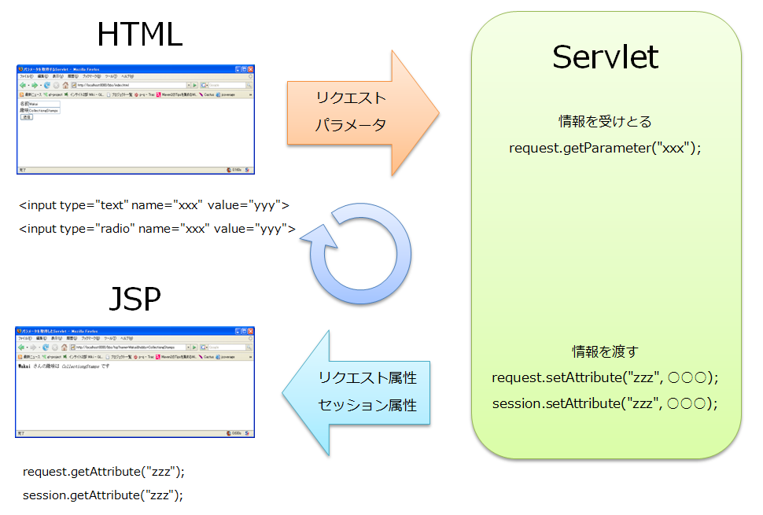
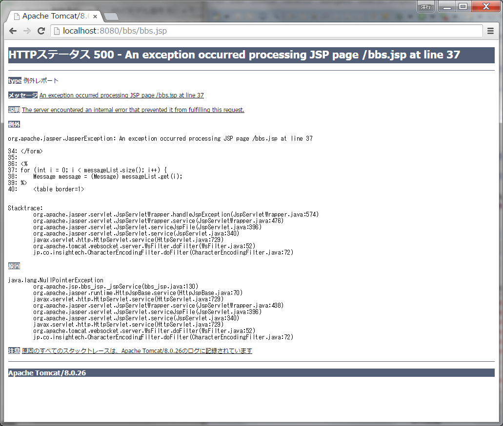

〜掲示板への道〜
6.JSPとの連携“初歩”編
「画面表示」処理はJSPに任せる
今まではサーブレットの中で「画面表示」処理をしていました。
「画面表示」処理をサーブレットから分離させ、JSP に担当させましょう。
画面（HTML）と Servlet と JSP の関係
次の図を見てください。
-
画面（HTML）からは <input> タグで表示されたテキストボックスやラジオボタンで入力された情報が
リクエストパラメータとして、Servlet に送られます。
- Servlet では、パラメータをリクエストから受け取り、リクエスト属性やセッション属性に値を設定します。
- JSP では、リクエスト属性やセッション属性から Servlet が設定した値を取得した画面を生成します。

JSPを作成する
まず、%CATALINA_HOME%\webapps\bbs\ に bbs.jsp を作成してください。
ファイルの中身は次のようにします。
%CATALINA_HOME%\webapps\bbs\bbs.jsp
<%@ page contentType="text/html; charset=MS932" %>
<%@ page import="jp.co.insightech.*" %>
<%@ page import="java.util.*" %>
<%
Vector messageList = (Vector) request.getAttribute("MESSAGE_LIST");
%>
<html>
<head>
<meta http-equiv="Content-Type" content="text/html; charset=Shift_JIS">
<title>掲示板</title>
</head>
<body>
<form action="./top" method="POST">
<table border="1">
<tr>
<td>名前</td>
<td><input type="text" name="name"></td>
</tr>
<tr>
<td>件名</td>
<td><input type="text" name="subject"></td>
</tr>
<tr>
<td>メッセージ</td>
<td><input type="text" name="content"></td>
</tr>
</table>
<input type="submit" name="sendMessage" value="送信">
</form>
<%
for (int i = 0; i < messageList.size(); i++) {
Message message = (Message) messageList.get(i);
%>
<table border=1>
<tr><td>名前</td><td><%= message.getName() %></td></tr>
<tr><td>件名</td><td><%= message.getSubject() %></td></tr>
<tr><td>メッセージ</td><td><%= message.getContent() %></td></tr>
</table><br>
<%
}
%>
</body>
</html>
ポイントは、
- <%@ page contentType="〜〜" %> でコンテントタイプを指定。
- <%@ page import="〜〜" %> で必要な Java のクラスをインポート
- request オブジェクトから属性値を取得。
です。
 なお、次の項目はご自身で探求してください。
なお、次の項目はご自身で探求してください。
- 「<%@ 〜 %>」「<% 〜 %>」
「<%= 〜 %>」がなんなのか
-
(String) request.getAttribute("MESSAGE_LIST");
はなんなのか（下で出てくる setAttribute と組で覚えてください。）
次に、BBSServlet から show メソッドを削除し、代わりに bbs.jsp を呼び出す処理を記述します。
%CATALINA_HOME%\webapps\bbs\jp\co\insightech\BBSServlet.java
package jp.co.insightech;
import java.io.*;
import javax.servlet.*;
import javax.servlet.http.*;
import java.sql.*;
import java.util.Vector;
public class BBSServlet extends HttpServlet {
public void doGet(HttpServletRequest request, HttpServletResponse response)
throws ServletException, IOException {
try {
MessageDao dao = new MessageDao();
String sendMessage = request.getParameter("sendMessage");
if (sendMessage != null) {
// (1) データベースに1件分レコードを挿入します
String name = request.getParameter("name");
String subject = request.getParameter("subject");
String content = request.getParameter("content");
Message message = new Message();
message.setName(name);
message.setSubject(subject);
message.setContent(content);
dao.registerMessage(message);
}
// (2) データベースにあるデータを全件取得します
Vector messageList = dao.getMessageList();
// 投稿メッセージの一覧を表示します
request.setAttribute("MESSAGE_LIST", messageList);
ServletContext sc = this.getServletContext();
RequestDispatcher rd = sc.getRequestDispatcher("/bbs.jsp");
rd.forward(request, response);
} catch (Exception e) {
e.printStackTrace();
}
}
show メソッドはいらなくなったので削除
それ以外のメソッドは省略
}
ポイントは、
- doGet メソッドから show メソッドが消えた（＝サーブレットが表示を担当しなくなった）。
- messageList を JSP に渡すために request の属性として設定している。
- そして JSP にフォワード
です。
特に以下の処理が何をしているかは、ご自身で探求してください。
- request.setAttribute("MESSAGE_LIST", messageList);
-
ServletContext sc = this.getServletContext(); 〜 rd.forward(request, response);
の流れは決まった形なのでこのまま覚えてください。
これで、JSP を使えるようになりました、ブラウザから
http://localhost:8080/bbs/top
にアクセスして今までと同じように動くことを確認してください。
JSPを WEB-INF の下に移動する
さて、JSP を使えるようになったところで、ブラウザから
http://localhost:8080/bbs/bbs.jsp
にアクセスしてみてください。
下記のような例外が表示されたかと思います。

このように今ある場所に作成した JSP には、ブラウザ（クライアント）から直接アクセスすることができます。
直接アクセスされるような意図を持っている場合は今ある場所に作成すればよいのですが、
今回のケースもそうですが、たいていの場合は、Servlet 経由でフォワードするかたちをとりますので、
直接アクセスされてしまうと、意図せぬ例外が発生してしまいます。
このような場合、JSP のもうひとつの置き場所として、WEB-INF の下に置くことができます。
まずは、bbs.jsp の場所を、
%CATALINA_HOME%\webapps\bbs\bbs.jsp
から
%CATALINA_HOME%\webapps\bbs\WEB-INF\bbs.jsp
に移動してください。
次に、この場所にある bbs.jsp にフォワードするために、BBSServlet を次のように変更します。
%CATALINA_HOME%\webapps\bbs\jp\co\insightech\BBSServlet.java
package jp.co.insightech;
import java.io.*;
import javax.servlet.*;
import javax.servlet.http.*;
import java.sql.*;
import java.util.Vector;
public class BBSServlet extends HttpServlet {
public void doGet(HttpServletRequest request, HttpServletResponse response)
throws ServletException, IOException {
・・・
途中は省略
・・・
RequestDispatcher rd = sc.getRequestDispatcher("/WEB-INF/bbs.jsp");
rd.forward(request, response);
} catch (Exception e) {
e.printStackTrace();
}
}
それ以外のメソッドは省略
}
これで、BBSServelt からは今まで通り、bbs.jsp にフォワードされますが、
bbs.jsp に直接アクセスすることは出来なくなりました。
試しに、
http://localhost:8080/bbs/WEB-INF/bbs.jsp
にアクセスしてみてください。
HTTPステータス 404 が返却されるはずです。
©日本インサイトテクノロジー株式会社